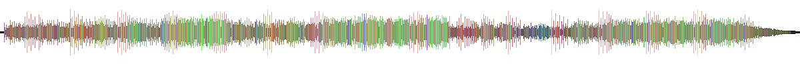
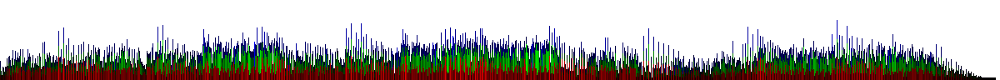
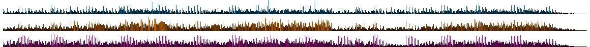
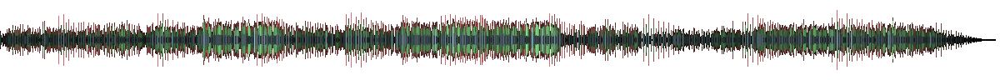
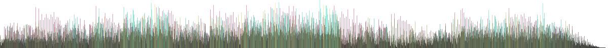
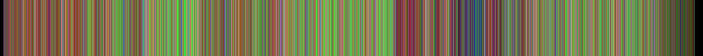
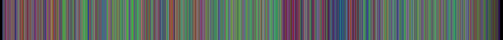

Audio Visuals for Music Apps.
Rebuilding the classic KDE Amarok timeline moodbars. Decode audio, run FFT analysis, and render high-impact color signatures across CLI, Web, iOS, and Android.
Interactive Sandbox
Test the WebAssembly DSP engine. Choose a synthetic generator loop or upload your own audio to preview and seek the moodbar output.
1. Audio Source
Drag & Drop audio here or Browse
2. Visual & Theme
Vinyl pitch shift effect. Faster = cooler colors, Slower = warmer colors.
3. Advanced DSP Settings
Active Output WASM render
Active Config Copy JSON into code
{ }Showcase Gallery
Visual footprints generated from this song. Can you recognize its structure, drops, and changes from the color signatures?

--svg-shape waveform --theme classic. An amplitude envelope styled with frequency color stops.
--svg-shape split-stacked --theme classic. Separate bass, midrange, and treble columns stacked vertically.
--svg-shape split-lanes --theme cool. Cyan/blue/green color mapping separating frequency lanes.
--svg-shape split-centrifugal --theme light. Pastel tone distribution pushing lows and mids outward.
--svg-shape split-overlapping --colors "#e91e63,#00ffcc,#ffeb3b". Translucent overlapping channels.
--svg-shape strip --theme classic. Flat legacy bar representation of track frequencies.Developer Integration
Moodbar.rs is built to deploy anywhere. Choose your platform block to view integration patterns.
Command Line Tools
Generate moodbars inside local build systems, directories, or scripts. Compile directly from crates.io with the native decoder. View moodbar on Crates.io
# Install CLI tool globally
cargo install moodbar --features="decode,png"
# Output a Waveform SVG
moodbar generate -i song.flac -o signature.svg --format svg --shape Waveform
# Batch convert an entire folder using all CPU cores
moodbar batch -i ./music -o ./moodbars --format png --shape SplitStackedCLI Reference
--format: svg, png, raw (Amarok legacy bytes).
--shape: Strip, Waveform, SplitStacked, SplitWaveform, SplitLanes, SplitCentrifugal, SplitOverlapping.
--fft-size: Power of 2 window size (64 to 8192).
WebAssembly Integration
Deploy interactive, responsive moodbars on the web. Decodes audio in the browser via OfflineAudioContext and runs DSP in Rust WASM. View @moodbar/wasm on NPM
import init, { analyze_with_options, svg, png } from '@moodbar/wasm';
// 1. Load WASM module
await init();
// 2. Decode file to mono PCM using Web Audio API
const audioCtx = new OfflineAudioContext(1, duration * 11025, 11025);
const audioBuffer = await audioCtx.decodeAudioData(fileBuffer);
const pcm = audioBuffer.getChannelData(0);
// 3. Run Rust DSP engine
const analysis = analyze_with_options(pcm, 11025, {
fft_size: 2048,
normalize_mode: 'PerChannelPeak'
});
// 4. Render directly to vector SVG string
const svgMarkup = svg(analysis, {
shape: 'SplitStacked',
width: 900,
height: 96
});
document.getElementById('container').innerHTML = svgMarkup;NPM WebAssembly
Size: ~180KB gzipped WASM payload.
Performance: Blazing fast analysis (<40ms for 60s of audio after decoding).
No Backend required: Client-side standalone visualization.
Expo / React Native Module
Native mobile bindings for high-performance audio scrubbing. Ships pre-built iOS XCFramework static library and Android JNI binaries. View @moodbar/native on NPM
import { analyze, render } from '@moodbar/native';
// 1. Run native decoding & analysis on background thread
const analysis = await analyze({
uri: 'file:///path/to/song.m4a'
}, {
normalize_mode: 'GlobalPeak',
fft_size: 1024
});
// 2. Generate PNG bytes as base64 or file
const pngResult = await render(analysis, 'png', {
shape: 'SplitLanes',
width: 800,
height: 120
});
// 3. Dispose of handle in Rust registry to clear memory
analysis.dispose();Mobile Packaging
Android ABIs: Includes compiled libraries for arm64-v8a, armeabi-v7a, x86, and x86_64.
iOS Support: Static binaries packed into a fat MoodbarNativeFFI.xcframework supporting real devices and simulator architectures.
Expo support: Direct configuration via custom plugin.
Performance: Blazing fast native DSP (<40ms for 60s of audio after decoding).
Rust Core & FFI Protocols
Advanced low-level FFI binding patterns used by C/C++ clients or custom language bridges.
// Avoid raw pointer management across FFI boundaries.
// Rust stores structs in a global registry using atomic u64 IDs.
pub struct MoodbarAnalysisRegistry {
handles: Mutex<HashMap<u64, MoodbarAnalysis>>
}
// Buffer allocations are transferred using direct structs
#[repr(C)]
pub struct MoodbarNativeBuffer {
pub ptr: *mut u8,
pub len: usize,
pub cap: usize,
}
// Standard C ABI exports
#[no_mangle]
pub unsafe extern "C" fn moodbar_native_buffer_free(
buf: *mut MoodbarNativeBuffer
) {
if !buf.is_null() && !(*buf).ptr.is_null() {
let _ = Vec::from_raw_parts((*buf).ptr, (*buf).len, (*buf).cap);
(*buf).ptr = std::ptr::null_mut();
}
}Memory Safety
Panic Boundary: All exports are wrapped in ffi_guard catching unwinds to avoid host process crashes.
JNI Envelope: Android JNI returns JSON envelopes for success/failure to simplify Java mapping.
Deterministic Performance: Static scratch buffers recycled in the analysis loops.
History of the Moodbar
Moodbar was born in the early 2000s as a KDE Amarok feature to visually navigate music timelines. Today, it lives on as a modern cross-platform tool.
The Moodbar concept maps the frequency spectrum of a song directly to visual hues: Bass energy drives red, Midrange drives green, and Treble drives blue. This creates a signature color strip that reveals the song's structure, drops, and changes at a single glance before you even hit play.
Originally developed as a plugin for KDE's Amarok audio player, legacy moodbars were generated using GStreamer pipelines and written to .mood files as raw RGB byte triples. Moodbar.rs keeps full compatibility with these legacy systems while upgrading the DSP pipeline to Rust and modern vector formats.
Classic Moodbar Strip

A legacy KDE-style 3-band color signature. The chronological progression of a song is encoded as flat color columns.
Under the Hood
How the Moodbar analyzes frequencies and translates them into visual patterns.
FFT Band Splitting
During analysis, audio frames are passed through a Fast Fourier Transform (FFT). FFT bins are aggregated into three main frequency bands: Bass (0–500Hz), Midrange (500Hz–2kHz), and Treble (2kHz–Nyquist).
Visual Coloring
Colors are calculated using the active energy of each band. In the Classic theme, Bass drives the red channel (purple/pink hues), Mids drive the green channel (orange/warm hues), and Treble drives the blue channel (cyan/cool hues).
Deterministic Peaks
To keep rendering consistent across systems, normalization is calculated either per-channel or globally across all channels, avoiding visual clipping or silent channels appearing empty.
Blazing Fast DSP
Once audio is decoded (which is platform-dependent), the DSP core runs extremely fast, analyzing 60 seconds of sound in under 40 milliseconds by recycling pre-allocated FFT and frame scratch buffers.